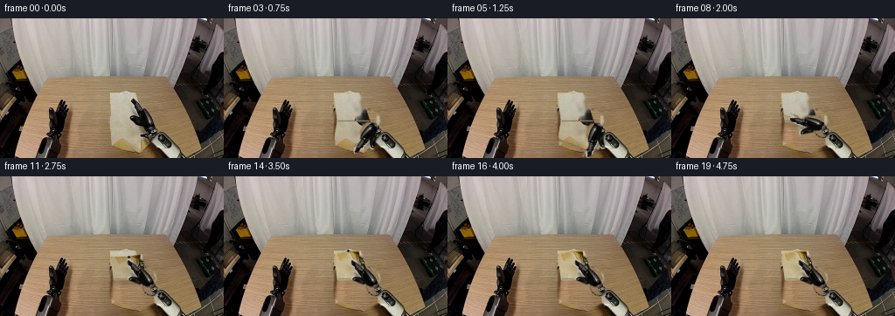
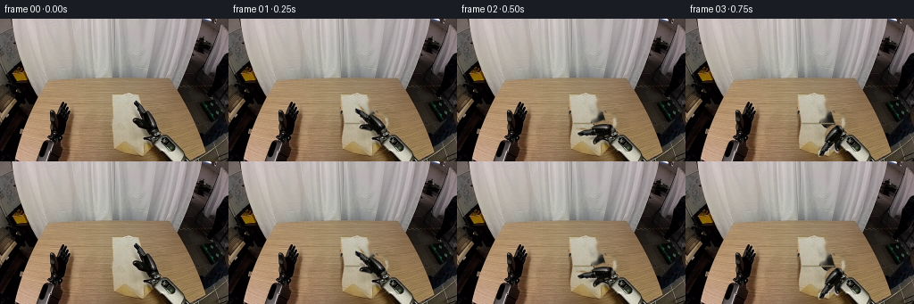
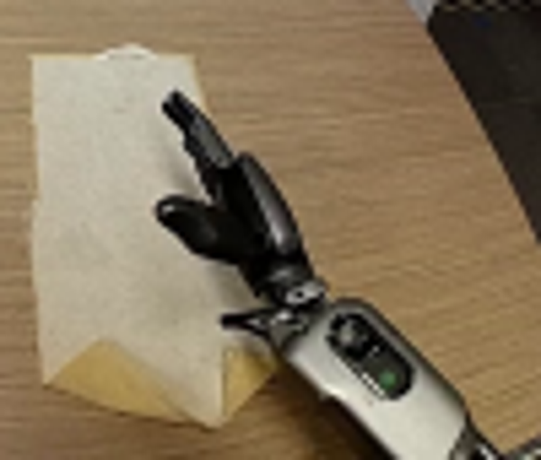
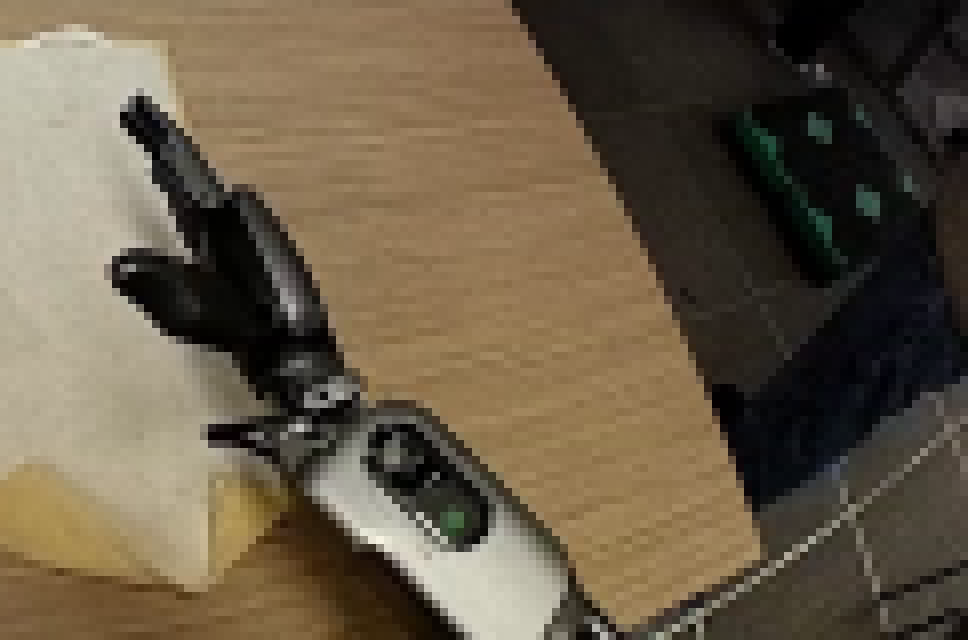
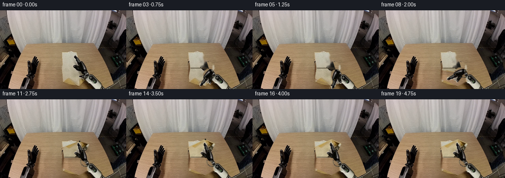

CODING AGENTS AS PIXEL WORLD MODELS
traex/GPT-5.6-Sol · common50_0029
点击播放 · 原生 RGB 像素
逐轮保存的候选
回放视频、检查图与代码变化。
每份候选均可单独播放。实际图片检查记录在下方工具轨迹中。
候选 01播放与检查图
点击播放 · 原生 RGB 像素

展开代码变化
--- 上一保存版本
+++ 本次保存版本
@@ -0,0 +1,220 @@
+from pathlib import Path
+import math
+import cv2
+import numpy as np
+from PIL import Image
+import artifact_io
+
+CASE_DIR = Path(__file__).resolve().parent
+W, H = 256, 160
+
+
+def smoothstep(x):
+ x = max(0.0, min(1.0, float(x)))
+ return x*x*(3.0-2.0*x)
+
+
+def feathered_paste(dst, src, mask, feather=0.55):
+ """Alpha paste an RGB source with a lightly antialiased uint8 mask."""
+ a = mask.astype(np.float32) / 255.0
+ if feather:
+ a = cv2.GaussianBlur(a, (0, 0), feather)
+ a = np.clip(a, 0, 1)[..., None]
+ return np.clip(dst.astype(np.float32)*(1-a) + src.astype(np.float32)*a, 0, 255).astype(np.uint8)
+
+
+def polygon_mask(points):
+ m = np.zeros((H, W), np.uint8)
+ cv2.fillPoly(m, [np.rint(np.asarray(points)).astype(np.int32)], 255, lineType=cv2.LINE_AA)
+ return m
+
+
+def warp_triangle(src_img, src_tri, dst_tri):
+ """Return one antialiased affine-warped triangular patch and its alpha."""
+ st = np.asarray(src_tri, np.float32)
+ dt = np.asarray(dst_tri, np.float32)
+ M = cv2.getAffineTransform(st, dt)
+ warped = cv2.warpAffine(src_img, M, (W, H), flags=cv2.INTER_CUBIC,
+ borderMode=cv2.BORDER_REFLECT_101)
+ sm = np.zeros((H, W), np.uint8)
+ cv2.fillConvexPoly(sm, np.rint(st).astype(np.int32), 255, lineType=cv2.LINE_AA)
+ wm = cv2.warpAffine(sm, M, (W, H), flags=cv2.INTER_LINEAR,
+ borderMode=cv2.BORDER_CONSTANT)
+ dm = polygon_mask(dt)
+ return warped, cv2.bitwise_and(wm, dm)
+
+
+def rotate_sprite(src_rgb, src_alpha, pivot, angle, shift=(0.0, 0.0)):
+ """Rigidly rotate the original gripper about its mechanical wrist joint."""
+ c, s = math.cos(angle), math.sin(angle)
+ px, py = pivot
+ tx, ty = shift
+ M = np.array([[c, -s, px - c*px + s*py + tx],
+ [s, c, py - s*px - c*py + ty]], np.float32)
+ rgb = cv2.warpAffine(src_rgb, M, (W, H), flags=cv2.INTER_CUBIC,
+ borderMode=cv2.BORDER_CONSTANT)
+ alpha = cv2.warpAffine(src_alpha, M, (W, H), flags=cv2.INTER_LINEAR,
+ borderMode=cv2.BORDER_CONSTANT)
+ return rgb, alpha
+
+
+def main():
+ first = np.array(Image.open(CASE_DIR / 'first_frame.png').convert('RGB'), dtype=np.uint8)
+
+ # Geometric support of the napkin in the supplied view.
+ upper = np.float32([[126, 87], [156, 84], [166, 117], [130, 118]])
+ A = np.float32([130, 117]) # left end of fold
+ B = np.float32([166, 117]) # right end of fold
+ C = np.float32([179, 143]) # lower-right hem
+ D = np.float32([160, 153]) # point held by the right gripper
+ E = np.float32([126, 139]) # lower-left hem
+ whole = np.float32([[126,87],[156,84],[166,117],[179,143],[160,153],[126,139]])
+
+ # Build a clean tabletop plate only where the cloth/hand originally lay.
+ # Nearby wood is copied rather than blurred, retaining the real grain.
+ table_plate = first.copy()
+ yy, xx = np.mgrid[0:H, 0:W]
+ sx = np.clip(xx - 49, 0, W-1)
+ wood = first[yy, sx].copy()
+ # Match the copied strip's local tone to this part of the table.
+ wood = np.clip(wood.astype(np.int16) + np.array([3, 1, -1], np.int16), 0, 255).astype(np.uint8)
+ erase = polygon_mask(whole)
+
+ # Original hand silhouette; this precise shape is also our photographic sprite.
+ grip_parts = [
+ np.array([[151,89],[156,88],[160,96],[160,101],[168,106],[172,112],
+ [169,117],[162,114],[156,107],[152,100]], np.int32),
+ np.array([[148,104],[153,104],[159,110],[165,112],[169,117],[166,122],
+ [159,120],[153,116],[148,113],[146,108]], np.int32),
+ np.array([[162,106],[170,105],[177,112],[178,118],[173,126],[166,124],
+ [161,118]], np.int32),
+ ]
+ grip_alpha = np.zeros((H,W), np.uint8)
+ for p in grip_parts:
+ cv2.fillPoly(grip_alpha, [p], 255, lineType=cv2.LINE_AA)
+ # Keep only pixels belonging to the dark/metal mechanism; slightly close holes
+ # so specular highlights remain attached to the photographic sprite.
+ hsv = cv2.cvtColor(first, cv2.COLOR_RGB2HSV)
+ mech = ((hsv[...,2] < 148) & (hsv[...,1] < 135)).astype(np.uint8)*255
+ mech = cv2.morphologyEx(mech, cv2.MORPH_CLOSE, np.ones((3,3),np.uint8))
+ grip_alpha = cv2.bitwise_and(grip_alpha, cv2.dilate(mech, np.ones((3,3),np.uint8)))
+ grip_alpha = cv2.GaussianBlur(grip_alpha, (0,0), 0.45)
+ grip_rgb = first.copy()
+ erase = cv2.max(erase, grip_alpha)
+ table_plate = feathered_paste(table_plate, wood, erase, 0.8)
+
+ # Reconstruct cloth texture hidden by the original fingers using true adjacent fibers.
+ cloth_tex = first.copy()
+ hidden = cv2.bitwise_and(grip_alpha, polygon_mask(whole))
+ cloth_tex = cv2.inpaint(cloth_tex, (hidden > 12).astype(np.uint8)*255, 3,
+ cv2.INPAINT_TELEA)
+
+ # Static robot wrist/forearm remains copied exactly from frame zero. It is
+ # composited after cloth, so the depth ordering remains physically correct.
+ arm_mask = np.zeros((H,W), np.uint8)
+ cv2.ellipse(arm_mask, (173,126), (10,10), 0, 0, 360, 255, lineType=cv2.LINE_AA)
+ cv2.fillPoly(arm_mask, [np.array([[174,120],[184,122],[196,132],[214,151],
+ [222,160],[256,160],[256,145],[237,138],
+ [215,129],[190,118],[179,115]],np.int32)],
+ 255, lineType=cv2.LINE_AA)
+ # Remove the original moving fingers from the forearm restoration layer.
+ arm_mask = cv2.bitwise_and(arm_mask, cv2.bitwise_not((grip_alpha > 20).astype(np.uint8)*255))
+
+ fold_src_tris = [
+ np.float32([A,B,D]),
+ np.float32([B,C,D]),
+ np.float32([A,D,E]),
+ ]
+ wrist = np.float32([171.5, 123.0])
+ v0 = np.float32([-15.5, -31.0])
+ a0 = math.atan2(float(v0[1]), float(v0[0]))
+ grasp_v = D - wrist
+ grasp_a = math.atan2(float(grasp_v[1]), float(grasp_v[0]))
+ # Choose the short, anatomically natural rotation through the left side.
+ while grasp_a - a0 > math.pi: grasp_a -= 2*math.pi
+ while grasp_a - a0 < -math.pi: grasp_a += 2*math.pi
+
+ frames = [first.copy()]
+ for fi in range(1,20):
+ canvas = table_plate.copy()
+
+ # Paste the stationary far half of the cloth from the original photograph.
+ um = polygon_mask(upper)
+ canvas = feathered_paste(canvas, cloth_tex, um, 0.38)
+
+ # First second: wrist turns toward the near hem. Thereafter it raises that
+ # hem through a smooth semicircle and lays it exactly onto the far half.
+ if fi <= 4:
+ reach = smoothstep(fi/4.0)
+ p = 0.0
+ hand_a = a0 + (grasp_a-a0)*reach
+ else:
+ p = smoothstep((fi-4)/10.0)
+ q = math.cos(math.pi*p)
+ lift = math.sin(math.pi*p)
+ # Orthographic projection of a rigid sheet rotating about fold AB.
+ def folded(pt):
+ # nearest fold y varies by one pixel across the crease
+ fy = 118.0 + (pt[0]-130.0) * (-1.0/36.0)
+ return np.float32([pt[0] + 1.5*lift,
+ fy + (pt[1]-fy)*q - 7.0*lift])
+ Cp, Dp, Ep = folded(C), folded(D), folded(E)
+ da = math.atan2(float(Dp[1]-wrist[1]), float(Dp[0]-wrist[0]))
+ # Continuously unwrap from the downward grasp direction.
+ while da - grasp_a > math.pi: da -= 2*math.pi
+ while da - grasp_a < -math.pi: da += 2*math.pi
+ hand_a = da
+
+ if fi <= 4:
+ Cp, Dp, Ep = C.copy(), D.copy(), E.copy()
+ dst_tris = [np.float32([A,B,Dp]), np.float32([B,Cp,Dp]), np.float32([A,Dp,Ep])]
+
+ # Soft contact shadow grows while the fabric is in the air, then settles.
+ if p > 0.001 and p < 0.999:
+ flap_poly = np.float32([A,B,Cp,Dp,Ep])
+ sh = polygon_mask(flap_poly + np.float32([2.5, 4.0 + 2.0*math.sin(math.pi*p)]))
+ sh = cv2.GaussianBlur(sh, (0,0), 3.0)
+ strength = (sh.astype(np.float32)/255.0 * (0.10 + 0.12*math.sin(math.pi*p)))[...,None]
+ canvas = np.clip(canvas.astype(np.float32)*(1-strength),0,255).astype(np.uint8)
+
+ # Warp the three parts of the moving half without stretching the robot or
+ # the environment. Lighting warms subtly when its beige underside faces up.
+ for st, dt in zip(fold_src_tris, dst_tris):
+ patch, pm = warp_triangle(cloth_tex, st, dt)
+ if p > 0:
+ warm = np.array([13,8,-5],np.float32) * (0.25 + 0.75*p)
+ shade = 1.0 - 0.12*math.sin(math.pi*p)
+ patch = np.clip(patch.astype(np.float32)*shade + warm,0,255).astype(np.uint8)
+ canvas = feathered_paste(canvas, patch, pm, 0.30)
+
+ # A crisp, slightly shadowed hinge communicates the fold instead of a slide.
+ crease_col = tuple(int(x) for x in np.array([112,97,69])*(0.65+0.20*p))
+ cv2.line(canvas, tuple(np.rint(A).astype(int)), tuple(np.rint(B).astype(int)),
+ crease_col, 1, cv2.LINE_AA)
+ if p > 0.88:
+ cv2.line(canvas, tuple(np.rint(Ep).astype(int)), tuple(np.rint(Dp).astype(int)),
+ (191,174,124), 1, cv2.LINE_AA)
+ cv2.line(canvas, tuple(np.rint(Dp).astype(int)), tuple(np.rint(Cp).astype(int)),
+ (184,166,117), 1, cv2.LINE_AA)
+
+ # Preserve the original, completely rigid right forearm and metallic joint.
+ canvas = feathered_paste(canvas, first, arm_mask, 0.32)
+
+ # Rotate (never deform) the photographic gripper about the visible wrist.
+ gr, ga = rotate_sprite(grip_rgb, grip_alpha, wrist, hand_a-a0)
+ canvas = feathered_paste(canvas, gr, ga, 0.20)
+
+ # Tiny dark pinch pads at the held hem reinforce contact during the fold.
+ if fi >= 4 and fi <= 15:
+ contact = Dp
+ cv2.circle(canvas, tuple(np.rint(contact).astype(int)), 1, (28,27,24), -1, cv2.LINE_AA)
+
+ frames.append(canvas.astype(np.uint8))
+
+ frames = np.stack(frames, axis=0).astype(np.uint8)
+ assert np.array_equal(frames[0], first)
+ artifact_io.save(frames, CASE_DIR)
+
+
+if __name__ == '__main__':
+ main()
候选 02播放与检查图
点击播放 · 原生 RGB 像素


展开代码变化
--- 上一保存版本
+++ 本次保存版本
@@ -150,15 +150,18 @@
hand_a = a0 + (grasp_a-a0)*reach
else:
p = smoothstep((fi-4)/10.0)
- q = math.cos(math.pi*p)
lift = math.sin(math.pi*p)
- # Orthographic projection of a rigid sheet rotating about fold AB.
- def folded(pt):
- # nearest fold y varies by one pixel across the crease
- fy = 118.0 + (pt[0]-130.0) * (-1.0/36.0)
- return np.float32([pt[0] + 1.5*lift,
- fy + (pt[1]-fy)*q - 7.0*lift])
- Cp, Dp, Ep = folded(C), folded(D), folded(E)
+ # Perspective-correct landing points: the near hem is wider than the
+ # far hem in this camera, so a true fold converges toward the table's
+ # vanishing point rather than merely mirroring in image coordinates.
+ # The sinusoidal vertical term is the projected arc of the raised hem.
+ C1 = np.float32([156.0, 85.0])
+ D1 = np.float32([142.0, 85.0])
+ E1 = np.float32([126.0, 89.0])
+ def folded(pt, target):
+ return (pt*(1.0-p) + target*p +
+ np.float32([2.0*lift, -13.0*lift]))
+ Cp, Dp, Ep = folded(C,C1), folded(D,D1), folded(E,E1)
da = math.atan2(float(Dp[1]-wrist[1]), float(Dp[0]-wrist[0]))
# Continuously unwrap from the downward grasp direction.
while da - grasp_a > math.pi: da -= 2*math.pi
@@ -188,7 +191,7 @@
canvas = feathered_paste(canvas, patch, pm, 0.30)
# A crisp, slightly shadowed hinge communicates the fold instead of a slide.
- crease_col = tuple(int(x) for x in np.array([112,97,69])*(0.65+0.20*p))
+ crease_col = tuple(int(x) for x in np.array([164,146,109])*(0.85+0.08*p))
cv2.line(canvas, tuple(np.rint(A).astype(int)), tuple(np.rint(B).astype(int)),
crease_col, 1, cv2.LINE_AA)
if p > 0.88:
可观测工具轨迹
实际执行的命令与返回图片。
命令 1exit 0
/bin/bash -lc "cat prompt.txt && printf '\\n---RULES---\\n' && cat GENERATION_RULES.md"
命令 2exit 1
/bin/bash -lc "find . -maxdepth 2 -type f -printf '%p %s bytes\\n' | sort && printf '\\nBINARIES\\n' && command -v ffmpeg && command -v python3"
命令 3exit 0
/bin/bash -lc "cat task_spec.json; printf '\\n--- artifact_io ---\\n'; sed -n '1,240p' artifact_io.py"
命令 4exit 0
/bin/bash -lc "python3 - <<'PY' mods=['numpy','PIL','cv2','imageio','scipy'] for m in mods: try: mm=__import__(m); print(m,'OK',getattr(mm,'__version__','')) except Exception as e: print(m,'NO',e) PY"
命令 5exit 0
/bin/bash -lc "python3 - <<'PY'
from PIL import Image
im=Image.open('first_frame.png')
im.crop((120,75,220,160)).resize((600,510)).save('.tmp/crop.png')
PY"命令 6exit 0
/bin/bash -lc "python3 - <<'PY'
from PIL import Image
im=Image.open('first_frame.png')
im.crop((135,80,256,160)).resize((968,640), Image.Resampling.NEAREST).save('.tmp/right.png')
PY"命令 7exit 0
/bin/bash -lc "cat > generate.py <<'PY'
from pathlib import Path
import math
import cv2
import numpy as np
from PIL import Image
import artifact_io
CASE_DIR = Path(__file__).resolve().parent
W, H = 256, 160
def smoothstep(x):
x = max(0.0, min(1.0, float(x)))
return x*x*(3.0-2.0*x)
def feathered_paste(dst, src, mask, feather=0.55):
\"\"\"Alpha paste an RGB source with a lightly antialiased uint8 mask.\"\"\"
a = mask.astype(np.float32) / 255.0
if feather:
a = cv2.GaussianBlur(a, (0, 0), feather)
a = np.clip(a, 0, 1)[..., None]
return np.clip(dst.astype(np.float32)*(1-a) + src.astype(np.float32)*a, 0, 255).astype(np.uint8)
def polygon_mask(points):
m = np.zeros((H, W), np.uint8)
cv2.fillPoly(m, [np.rint(np.asarray(points)).astype(np.int32)], 255, lineType=cv2.LINE_AA)
return m
def warp_triangle(src_img, src_tri, dst_tri):
\"\"\"Return one antialiased affine-warped triangular patch and its alpha.\"\"\"
st = np.asarray(src_tri, np.float32)
dt = np.asarray(dst_tri, np.float32)
M = cv2.getAffineTransform(st, dt)
warped = cv2.warpAffine(src_img, M, (W, H), flags=cv2.INTER_CUBIC,
borderMode=cv2.BORDER_REFLECT_101)
sm = np.zeros((H, W), np.uint8)
cv2.fillConvexPoly(sm, np.rint(st).astype(np.int32), 255, lineType=cv2.LINE_AA)
wm = cv2.warpAffine(sm, M, (W, H), flags=cv2.INTER_LINEAR,
borderMode=cv2.BORDER_CONSTANT)
dm = polygon_mask(dt)
return warped, cv2.bitwise_and(wm, dm)
def rotate_sprite(src_rgb, src_alpha, pivot, angle, shift=(0.0, 0.0)):
\"\"\"Rigidly rotate the original gripper about its mechanical wrist joint.\"\"\"
c, s = math.cos(angle), math.sin(angle)
px, py = pivot
tx, ty = shift
M = np.array([[c, -s, px - c*px + s*py + tx],
[s, c, py - s*px - c*py + ty]], np.float32)
rgb = cv2.warpAffine(src_rgb, M, (W, H), flags=cv2.INTER_CUBIC,
borderMode=cv2.BORDER_CONSTANT)
alpha = cv2.warpAffine(src_alpha, M, (W, H), flags=cv2.INTER_LINEAR,
borderMode=cv2.BORDER_CONSTANT)
return rgb, alpha
def main():
first = np.array(Image.open(CASE_DIR / 'first_frame.png').convert('RGB'), dtype=np.uint8)
# Geometric support of the napkin in the supplied view.
upper = np.float32([[126, 87], [156, 84], [166, 117], [130, 118]])
A = np.float32([130, 117]) # left end of fold
B = np.float32([166, 117]) # right end of fold
C = np.float32([179, 143]) # lower-right hem
D = np.float32([160, 153]) # point held by the right gripper
E = np.float32([126, 139]) # lower-left hem
whole = np.float32([[126,87],[156,84],[166,117],[179,143],[160,153],[126,139]])
# Build a clean tabletop plate only where the cloth/hand originally lay.
# Nearby wood is copied rather than blurred, retaining the real grain.
table_plate = first.copy()
yy, xx = np.mgrid[0:H, 0:W]
sx = np.clip(xx - 49, 0, W-1)
wood = first[yy, sx].copy()
# Match the copied strip's local tone to this part of the table.
wood = np.clip(wood.astype(np.int16) + np.array([3, 1, -1], np.int16), 0, 255).astype(np.uint8)
erase = polygon_mask(whole)
# Original hand silhouette; this precise shape is also our photographic sprite.
grip_parts = [
np.array([[151,89],[156,88],[160,96],[160,101],[168,106],[172,112],
[169,117],[162,114],[156,107],[152,100]], np.int32),
np.array([[148,104],[153,104],[159,110],[165,112],[169,117],[166,122],
[159,120],[153,116],[148,113],[146,108]], np.int32),
np.array([[162,106],[170,105],[177,112],[178,118],[173,126],[166,124],
[161,118]], np.int32),
]
grip_alpha = np.zeros((H,W), np.uint8)
for p in grip_parts:
cv2.fillPoly(grip_alpha, [p], 255, lineType=cv2.LINE_AA)
# Keep only pixels belonging to the dark/metal mechanism; slightly close holes
# so specular highlights remain attached to the photographic sprite.
hsv = cv2.cvtColor(first, cv2.COLOR_RGB2HSV)
mech = ((hsv[...,2] < 148) & (hsv[...,1] < 135)).astype(np.uint8)*255
mech = cv2.morphologyEx(mech, cv2.MORPH_CLOSE, np.ones((3,3),np.uint8))
grip_alpha = cv2.bitwise_and(grip_alpha, cv2.dilate(mech, np.ones((3,3),np.uint8)))
grip_alpha = cv2.GaussianBlur(grip_alpha, (0,0), 0.45)
grip_rgb = first.copy()
erase = cv2.max(erase, grip_alpha)
table_plate = feathered_paste(table_plate, wood, erase, 0.8)
# Reconstruct cloth texture hidden by the original fingers using true adjacent fibers.
cloth_tex = first.copy()
hidden = cv2.bitwise_and(grip_alpha, polygon_mask(whole))
cloth_tex = cv2.inpaint(cloth_tex, (hidden > 12).astype(np.uint8)*255, 3,
cv2.INPAINT_TELEA)
# Static robot wrist/forearm remains copied exactly from frame zero. It is
# composited after cloth, so the depth ordering remains physically correct.
arm_mask = np.zeros((H,W), np.uint8)
cv2.ellipse(arm_mask, (173,126), (10,10), 0, 0, 360, 255, lineType=cv2.LINE_AA)
cv2.fillPoly(arm_mask, [np.array([[174,120],[184,122],[196,132],[214,151],
[222,160],[256,160],[256,145],[237,138],
[215,129],[190,118],[179,115]],np.int32)],
255, lineType=cv2.LINE_AA)
# Remove the original moving fingers from the forearm restoration layer.
arm_mask = cv2.bitwise_and(arm_mask, cv2.bitwise_not((grip_alpha > 20).astype(np.uint8)*255))
fold_src_tris = [
np.float32([A,B,D]),
np.float32([B,C,D]),
np.float32([A,D,E]),
]
wrist = np.float32([171.5, 123.0])
v0 = np.float32([-15.5, -31.0])
a0 = math.atan2(float(v0[1]), float(v0[0]))
grasp_v = D - wrist
grasp_a = math.atan2(float(grasp_v[1]), float(grasp_v[0]))
# Choose the short, anatomically natural rotation through the left side.
while grasp_a - a0 > math.pi: grasp_a -= 2*math.pi
while grasp_a - a0 < -math.pi: grasp_a += 2*math.pi
frames = [first.copy()]
for fi in range(1,20):
canvas = table_plate.copy()
# Paste the stationary far half of the cloth from the original photograph.
um = polygon_mask(upper)
canvas = feathered_paste(canvas, cloth_tex, um, 0.38)
# First second: wrist turns toward the near hem. Thereafter it raises that
# hem through a smooth semicircle and lays it exactly onto the far half.
if fi <= 4:
reach = smoothstep(fi/4.0)
p = 0.0
hand_a = a0 + (grasp_a-a0)*reach
else:
p = smoothstep((fi-4)/10.0)
q = math.cos(math.pi*p)
lift = math.sin(math.pi*p)
# Orthographic projection of a rigid sheet rotating about fold AB.
def folded(pt):
# nearest fold y varies by one pixel across the crease
fy = 118.0 + (pt[0]-130.0) * (-1.0/36.0)
return np.float32([pt[0] + 1.5*lift,
fy + (pt[1]-fy)*q - 7.0*lift])
Cp, Dp, Ep = folded(C), folded(D), folded(E)
da = math.atan2(float(Dp[1]-wrist[1]), float(Dp[0]-wrist[0]))
# Continuously unwrap from the downward grasp direction.
while da - grasp_a > math.pi: da -= 2*math.pi
while da - grasp_a < -math.pi: da += 2*math.pi
hand_a = da
if fi <= 4:
Cp, Dp, Ep = C.copy(), D.copy(), E.copy()
dst_tris = [np.float32([A,B,Dp]), np.float32([B,Cp,Dp]), np.float32([A,Dp,Ep])]
# Soft contact shadow grows while the fabric is in the air, then settles.
if p > 0.001 and p < 0.999:
flap_poly = np.float32([A,B,Cp,Dp,Ep])
sh = polygon_mask(flap_poly + np.float32([2.5, 4.0 + 2.0*math.sin(math.pi*p)]))
sh = cv2.GaussianBlur(sh, (0,0), 3.0)
strength = (sh.astype(np.float32)/255.0 * (0.10 + 0.12*math.sin(math.pi*p)))[...,None]
canvas = np.clip(canvas.astype(np.float32)*(1-strength),0,255).astype(np.uint8)
# Warp the three parts of the moving half without stretching the robot or
# the environment. Lighting warms subtly when its beige underside faces up.
for st, dt in zip(fold_src_tris, dst_tris):
patch, pm = warp_triangle(cloth_tex, st, dt)
if p > 0:
warm = np.array([13,8,-5],np.float32) * (0.25 + 0.75*p)
shade = 1.0 - 0.12*math.sin(math.pi*p)
patch = np.clip(patch.astype(np.float32)*shade + warm,0,255).astype(np.uint8)
canvas = feathered_paste(canvas, patch, pm, 0.30)
# A crisp, slightly shadowed hinge communicates the fold instead of a slide.
crease_col = tuple(int(x) for x in np.array([112,97,69])*(0.65+0.20*p))
cv2.line(canvas, tuple(np.rint(A).astype(int)), tuple(np.rint(B).astype(int)),
crease_col, 1, cv2.LINE_AA)
if p > 0.88:
cv2.line(canvas, tuple(np.rint(Ep).astype(int)), tuple(np.rint(Dp).astype(int)),
(191,174,124), 1, cv2.LINE_AA)
cv2.line(canvas, tuple(np.rint(Dp).astype(int)), tuple(np.rint(Cp).astype(int)),
(184,166,117), 1, cv2.LINE_AA)
# Preserve the original, completely rigid right forearm and metallic joint.
canvas = feathered_paste(canvas, first, arm_mask, 0.32)
# Rotate (never deform) the photographic gripper about the visible wrist.
gr, ga = rotate_sprite(grip_rgb, grip_alpha, wrist, hand_a-a0)
canvas = feathered_paste(canvas, gr, ga, 0.20)
# Tiny dark pinch pads at the held hem reinforce contact during the fold.
if fi >= 4 and fi <= 15:
contact = Dp
cv2.circle(canvas, tuple(np.rint(contact).astype(int)), 1, (28,27,24), -1, cv2.LINE_AA)
frames.append(canvas.astype(np.uint8))
frames = np.stack(frames, axis=0).astype(np.uint8)
assert np.array_equal(frames[0], first)
artifact_io.save(frames, CASE_DIR)
if __name__ == '__main__':
main()
PY
python3 generate.py
python3 - <<'PY'
from PIL import Image
Image.open('inspection.png').save('.tmp/inspection.png')
PY"命令 8exit 0
/bin/bash -lc "python3 generate.py && python3 - <<'PY'
import numpy as np
from PIL import Image
from pathlib import Path
x=np.load('pixels.npz')['pixels']
assert x.shape==(160,256,20)
a=np.array(Image.open('first_frame.png').convert('RGB'),dtype=np.uint32)
p=(a[:,:,0]<<16)|(a[:,:,1]<<8)|a[:,:,2]
print('first_equal',np.array_equal(x[:,:,0],p),'shape',x.shape,'frames',len(list(Path('frames').glob('*.png'))))
PY"视觉工具实际返回图片 1

视觉工具实际返回图片 2

视觉工具实际返回图片 3

视觉工具实际返回图片 4

视觉工具实际返回图片 5

保存候选 2 份；完成命令 8 次；可验证图片返回 5 张。原始 API 响应与完整日志保留在本地。